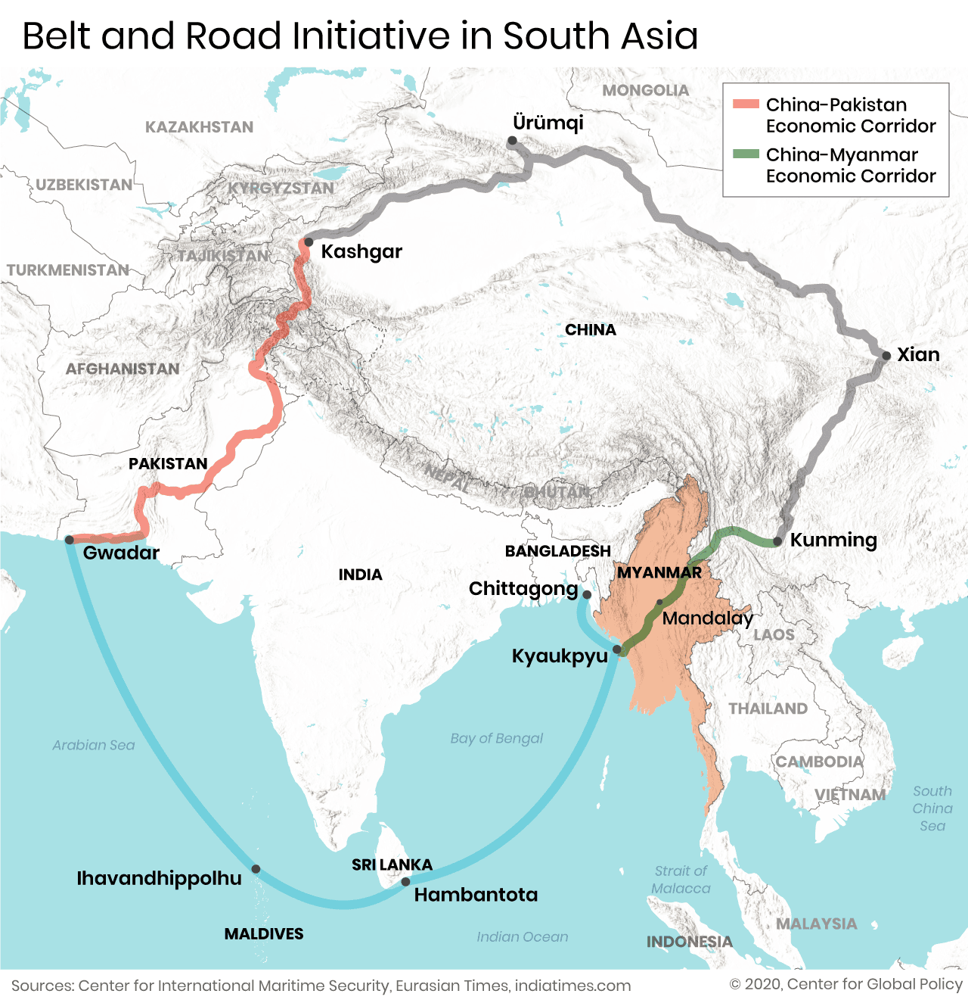
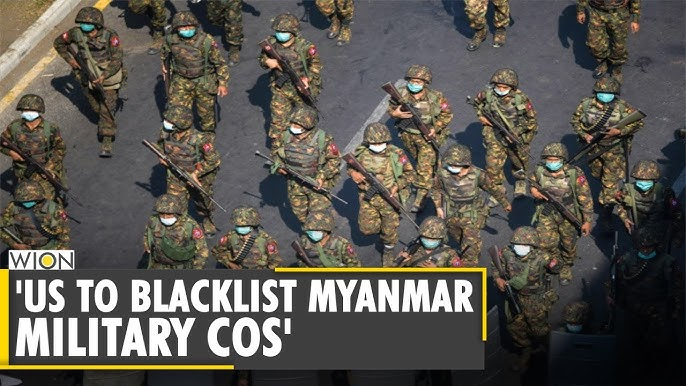

What Needs to Happen for Peace?
What Needs to Happen for Peace?
🔹International pressure on Myanmar’s military (including China & Russia)
🔹More support for opposition groups to form a strong, united front
🔹ASEAN taking a stronger role (e.g., suspending Myanmar’s military government from ASEAN activities)
🔹Ceasefire agreements between the military and ethnic groups
🔹A transition plan for real democracy
Causes of the Myanmar Conflict
Military Coup (2021)
Military Coup (2021)
🔹In February 2021, the Tatmadaw (Myanmar military) overthrew the civilian government, claiming election fraud.
🔹The military arrested Aung San Suu Kyi and other leaders of the National League for Democracy (NLD), the party that won the 2020 election.
🔹This triggered mass protests, followed by brutal military crackdowns.
Causes of the Myanmar Conflict
Ethnic Conflicts (Long History)
Ethnic Conflicts (Long History)
🔹Myanmar has over 135 ethnic groups, and many have armed groups fighting for autonomy.
🔹Conflicts between the Myanmar military and ethnic armed organizations (EAOs) have existed for decades (e.g., Kachin, Karen, Shan, Rakhine groups).
🔹The military uses divide-and-rule tactics to weaken opposition groups.
Causes of the Myanmar Conflict
Resistance & Civil War
Resistance & Civil War
🔹After the coup, civilians formed the People’s Defense Force (PDF) to fight the military.
🔹The National Unity Government (NUG) was formed as an alternative government.
🔹The PDF joined forces with ethnic armed groups, turning the crisis into a nationwide conflict.
Causes of the Myanmar Conflict
Weak Democratic Foundations
Weak Democratic Foundations
🔹Myanmar had a military-backed constitution (2008), allowing the military to keep power even during democracy.
🔹The military controls 25% of parliament seats automatically, giving it veto power over constitutional changes.
🔹True democracy never fully developed, making it easy for the military to seize power again.

Causes of the Myanmar Conflict
Economic & Geopolitical Interests
Economic & Geopolitical Interests
🔹The military controls Myanmar’s economy, including natural resources like jade, oil, and gas.
🔹Countries like China, Russia, and India have economic and strategic interests in Myanmar, making them cautious about intervening.
Why Is the Conflict So Hard to Fix?
The Military Refuses to Back Down
The Military Refuses to Back Down
🔹The Tatmadaw has ruled Myanmar for decades and sees itself as the country’s protector.
🔹It has no interest in negotiating unless it is forced to.
🔹Brutal tactics like airstrikes, arrests, and torture keep the opposition weak.

Why Is the Conflict So Hard to Fix?
The Resistance Is Fragmented
The Resistance Is Fragmented
🔹The opposition includes:
- Ethnic armed groups (EAOs)
- People’s Defense Force (PDF)
- National Unity Government (NUG)
🔹These groups don’t always agree on strategy or leadership, making it hard to form a unified front.
Why Is the Conflict So Hard to Fix?
ASEAN’s Non-Interference Policy
ASEAN’s Non-Interference Policy
🔹ASEAN follows a policy of “non-interference”, meaning it does not forcefully intervene in member states’ internal conflicts.
🔹This limits ASEAN’s ability to pressure the military.
🔹Some ASEAN countries (e.g., Thailand, Cambodia) have close ties with Myanmar’s military and prefer a soft approach.

Why Is the Conflict So Hard to Fix?
International Division
International Division
🔹Western countries (US, EU, UK) imposed sanctions on Myanmar’s military but have limited influence.
🔹China and Russia support the military with weapons and investments, blocking strong action at the UN.
🔹India also avoids strong action due to its border and economic interests.
Why Is the Conflict So Hard to Fix?
Economic Collapse & Humanitarian Crisis
Economic Collapse & Humanitarian Crisis
🔹Myanmar’s economy is collapsing, making daily life harder for people.
🔹Over 2.5 million people have been displaced, creating a refugee crisis.
🔹The military controls aid distribution, so humanitarian efforts are limited.